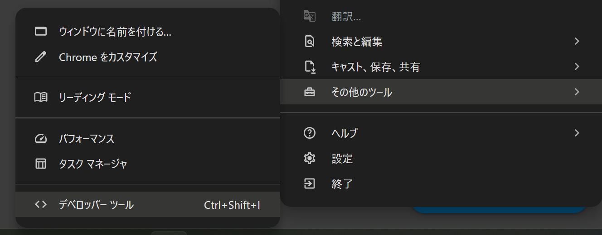
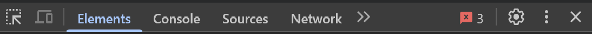
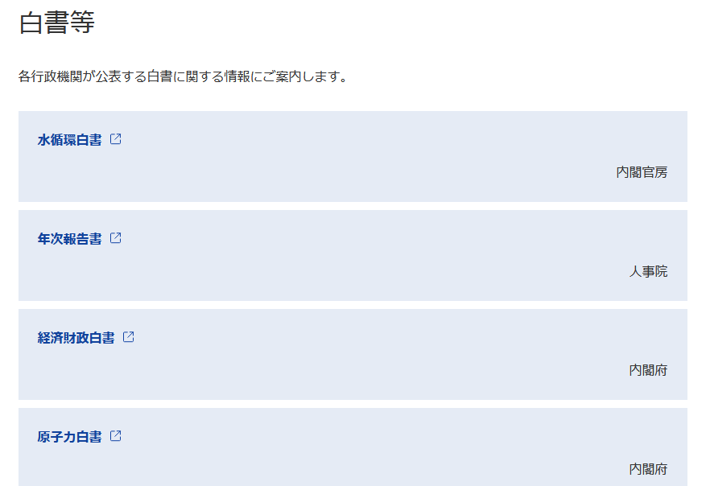
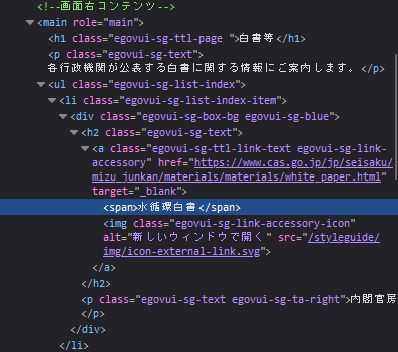

library(rvest)
library(tidyverse)
url <- "https://www.e-gov.go.jp/about-government/white-papers.html"
html <- read_html(url)はじめに
今回はRでスクレイピングを行っていきます。rvestパッケージを使ったスクレイピング自体は他のウェブサイトでも多数紹介されているのですが、今回JavaScriptが使われているページ（特にe-Stat）にも対応した方法をまとめます。これを行うには既に紹介されている方法からもう一工夫する必要があり、それも少々面倒です。
これまで僕はブラウザ拡張機能の「DownThemAll!」1を使って無理くり実行していたのですが、この手の方法は再現が難しいし手間という欠点があるので、できればR上でコードとして残しておきたいと思っていました。そんなところ友人からあるページを紹介してもらい、抱えていた課題2が解決できそうでしたので、これを機にまとめていきます。
紹介してもらったページはこちらです↓
また、Google Chromeを使用するので、インストールしていない方はしておいてください。
使用するパッケージ
使用するパッケージは以下の通りです。Rプロジェクトを使うなりsetwd()を使うなりでワーキングディレクトリを現在のディレクトリに設定しておいてください。プロジェクトについてはこちら。
ついでに、保存するディレクトリ（dataフォルダ内のshpfiles）をあらかじめ指定しておきます。なければ作成する関数もつけておきます。
library(rvest)
library(here)
save_dir <- here("data/shpfiles")
# ダウンロード用のフォルダがなければ作成する
if (!dir.exists(save_dir)) {
dir.create(save_dir)
}ファイルをダウンロードするページ
今回ファイルを取得していくのは、e-Statの「地図」→「境界データダウンロード」→「3次メッシュ」→「世界測地系平面直角座標系・Shapefile」のページです。
メッシュいうのは国土を例えば1km×1kmの正方形で区切ったものをいい、その中の人口等のデータを扱うことができるようになります。このあたりの詳細は以下の書籍が非常にわかりやすいのでおすすめです。RでGISを扱う方法も学べます。
ページを取得
基本的にはread_html()関数で読み込むことができるのですが、JavaScriptを使用しているような動的なページには対応していません。そこで使用するのがread_html_live()関数です。これらの関数の仕組み自体は冒頭で紹介したページがわかりやすいのでそちらを読んでみてください。
先ほどのURLを読み込んでみましょう。
html <- read_html_live("https://www.e-stat.go.jp/gis/statmap-search?page=1&type=2&aggregateUnitForBoundary=S&coordsys=2&format=shape")ファイルのリンクを取得
次にいよいよファイルを取得していきます。僕もHTMLに詳しいわけではないので詳細は書きませんが、aタグというのがリンクを生成するためのもので、その中にhrefという属性があります。例えば
<a class="stat-dl_icon stat-statistics-table_icon" tabindex="40" href="/gis/statmap-search/data?dlserveyId=S&code=3036&coordSys=2&format=shape&downloadType=5">
<span class="stat-dl_text">世界測地系平面直角座標系・Shapefile</span>
</a>というようになっており、aと/aで囲まれている間にhrefやその他の属性が含まれていることがわかります。
Tipどうやって探す？
このHTMLはどうやって探せばよいのでしょうか。実はブラウザ上から簡単に見ることができます。
ブラウザ上で任意のページを開いたら、Ctrl + Shift + Iを同時に入力します。もしくはブラウザ右上の点々から「その他のツール」→「デベロッパー ツール」でも開けます。

すると画面右側になにやらぶわぁーっと出てきますね。これの上半分がHTMLコードです。ここから特定のコードを探すのは骨が折れそうですが、逆にページの要素をクリックすることで該当するコードを探すことができます。デベロッパーツール画面上部の左側にカーソルのようなアイコンがあります。

これをクリックしたうえでページ上の要素にカーソルを重ねてクリックすると、該当箇所のコードが表示されます。カーソルを「世界測地系平面直角座標系・Shapefile」という文字に重ねると先ほどのコードが表示されます。
ここではaタグを探す→hrefを探し取得する、という手順を踏みます。
links <- html |>
html_elements("a") |>
html_attr("href")html_elements("a")でaタグを探し、html_attr("href")で属性（attribute）を探しています。linksにはaタグの中のhrefに入っているリンクがずらーっと入っていることになります。
ここでは表示しませんが、linksの中身を確認すると、想像以上にたくさんのリンクが入っていることがわかります。ここからさらにシェープファイルのダウンロードリンクを探さなければなりません。
上のaタグの例を見てもらうと、/gis/statmap-search/data?dlserveyId=S&code=3036&coordSys=2&format=shape&downloadType=5というのがシェープファイルのダウンロードリンクであることがわかります。他のシェープファイルのリンクと見比べてもらうと、code=3036の部分だけがそれぞれ異なっており、他は同じです。すなわち、まとめてダウンロードしたければこの部分さえうまいことやれば可能になるということです。
とりあえず、数多のリンクの中からシェープファイルのリンクだけ抽出しておきましょう。linksの中のリンクを確認すると、data?dlserveyId=S&という部分がシェープファイルのダウンロードリンクにのみ含まれていることがわかる、これを含むリンクを抽出すればよいことになります。
shp_links <- links[grepl("data\\?dlserveyId=S&", links)]ポイント：
grepl()で条件に合致するものを抽出grepl(x, y)で、yの中でxを含むものにTRUEを返すlinksの中でdata\\?dlserveyId=S&を含むものにTRUEを返している?の前に\\が入っているのは、正規表現の中で?は特別な役割を持っているので、その役割として認識されるのを防ぐため（エスケープしている）
links[ ]で、TRUEを持つものを抽出している- すなわち
grepl()でTRUEを返したもの（=シェープファイルのダウンロードリンクをもつもの）だけが残る
- すなわち
短いコードでもややこしいですね。特に記号のところには気を付けていただければと思います。
リンクを整形する
お気づきの方もいらっしゃると思いますが、実は先ほどのリンクは相対的なものです。https://から始まっていません。ベースとしてhttps://www.e-stat.go.jpというURLがあり、そこに続く形で/gis/...が入ってきます。
以下では取得したリンクにベースリンクをくっつけていきます。
base_url <- "https://www.e-stat.go.jp"
full_urls <- paste0(base_url, shp_links)これでページ内の20個のリンクを抽出することができました。次にこれらのリンクを使ってダウンロードしていきます。
ファイルをダウンロード
いよいよダウンロードをしていきます。
全てのリンクに対しダウンロードするコードを適用します。forの出番です。
for (i in seq_along(full_urls)) {
# リンクからメッシュコードを取得
code <- sub(".*code=([0-9]+).*", "\\1", shp_links[i])
# ダウンロードするファイルのパスを指定する
# 例: shpfiles/shpfile_3036.zip
file_path <- file.path(save_dir, paste0("shpfile_", code, ".zip"))
# ファイルをダウンロード
download.file(full_urls[i], destfile = file_path, mode = "wb")
# アクセス間隔を空ける
# サーバー負荷を考慮
Sys.sleep(2)
}ポイント：
seq_along(full_urls)はfull_urlsの要素の数を取得している- 今回はURLが20個と分かっているが、数が多くて数えにくいような場合にも有用
sub(".*code=([0-9]+).*", "\1", shp_links[i])でメッシュコードを取得sub(pattern, replacement, x)でxのpetternをreplacementに置換する.*code=([0-9]+).*はざっくり言うと、前後が何であれcode=(何らかの数字)というものを探してきて、括弧内の数字を取得しているということ\\1は今取得した数字を返すということxにはshp_links[i]が該当するので、i番目のリンクで上で述べた置換をしているということ
file_path <- file.path(save_dir, paste0("shpfile_", code, ".zip"))で保存する際のファイル名を作成現在のワーキングディレクトリにある
data内のshpfilesというフォルダの中にshpfile_3036.zipというようなZipファイルを作成するダウンロードはZipファイルで行われるので拡張子は
.zipとしておく
my_project/
├── data/
├── shpfiles/ ← ここにダウンロードする
└── scripts/
├── download_script.R
├── analysis.R
└── ...download.file(full_urls[i], destfile = file_path, mode = "wb")でダウンロードdownload.file(url, destfile, mode)でurlをdestfileにmodeで指定したモードでダウンロードする詳細は省くが、Zipファイルに対しては
mode="wbを指定する
Sys.sleep(2)でサーバー負荷を軽減する- 作業ごとに2秒のインターバルを設けるということ
さすがに面倒すぎますね。最初は困ると思いますが、2回目以降大変便利に思えるはずです。
ひとまずこれでページ上のファイルをダウンロードすることができました！
全ページまとめてダウンロード
ここまでは1ページ内のファイルをダウンロードする方法について順を追って見てきました。
このセクションではシェープファイルが1～9ページにまたがって並んでいることを踏まえ、さらにforループを構築し、これまでの作業を9ページにわたって実行できるようにします。
for (i in 1:9) {
url <- paste0("https://www.e-stat.go.jp/gis/statmap-search?page=", i, "&type=2&aggregateUnitForBoundary=S&coordsys=1&format=shape")
html <- read_html_live(url)
Sys.sleep(1)
links <- html |>
html_elements("a") |>
html_attr("href")
shp_links <- links[grepl("data\\?dlserveyId=S&", links)]
full_urls <- paste0(base_url, shp_links)
for (j in seq_along(full_urls)) {
code <- sub(".*code=([0-9]+).*", "\\1", shp_links[j])
file_path <- file.path(save_dir, paste0("shpfile_", code, ".zip"))
if (!file.exists(file_path)) {
tryCatch({
download.file(full_urls[j], destfile = file_path, mode = "wb")
}, error = function(e) {})
Sys.sleep(2)
}
}
}ポイント：
- URLの
page=の部分に1から9が入るように設定- URLを分割し、ページ数の部分に
iで数字を入れています。
- URLを分割し、ページ数の部分に
- HTMLを読み込んだ後に
Sys.sleep(1)で1秒待機- HTMLを読み込んですぐ次のコマンドに移ると、中身を最後まで読み込まないまま次を実行してしまうので、しっかり読み込めるようにするための設定です。
forループ2段階目- 大外の
forでiを使っているので、今度はjにしています。 ifでファイルがない場合に実行するようにしている。- 何らかの理由で途中エラーが発生し、再度全体を実行しても、既にダウンロードできているファイルを重複してダウンロードせずに済みます。
tryCatchは、途中でエラーが起きたときでもスクリプト全体を止めずに柔軟に処理を続けるための関数で、エラーが起きても一旦スキップして最後まで実行します。
- 大外の
見慣れない関数も登場しましたが、このコードを実行すれば9ページ分まとめてダウンロードすることが可能です。
コードまとめ
最後に今回のコードをまとめます。
library(rvest)
library(here)
for (i in 1:9) {
url <- paste0("https://www.e-stat.go.jp/gis/statmap-search?page=", i, "&type=2&aggregateUnitForBoundary=S&coordsys=1&format=shape")
html <- read_html_live(url)
Sys.sleep(1)
links <- html |>
html_elements("a") |>
html_attr("href")
shp_links <- links[grepl("data\\?dlserveyId=S&", links)]
full_urls <- paste0(base_url, shp_links)
for (j in seq_along(full_urls)) {
code <- sub(".*code=([0-9]+).*", "\\1", shp_links[j])
file_path <- here("shpfiles", paste0("shpfile_", code, ".zip"))
if (!file.exists(file_path)) {
tryCatch({
download.file(full_urls[j], destfile = file_path, mode = "wb")
}, error = function(e) {})
Sys.sleep(2)
}
}
}おわりに
今回はRでe-Statのシェープファイルを取得してきました。個人的にもずっとやりたいことだったので、不完全とはいえ、念願かなった感じです。
今後も調査して全ページを一つのループでダウンロードできるようなコードを書いていきたいと思います。
おまけ
Zipファイルでダウンロードすることになりますが、今回の流れでエクスプローラーから直接展開したりファイルを削除するのは面倒だと思います。
解凍し、使用済みのZipファイルを削除するには以下を実行します。
zip_files <- list.files(save_dir, pattern = "\\.zip$", full.names = TRUE)
for (zip_path in zip_files) {
unzip(zip_path, exdir = save_dir)
file.remove(zip_path)
}unzip()でZipファイルを解凍して、file.remove()でZipファイルを削除します。
その他の実用例
最近仕事の一環で時間がかかりそうな作業をスクレイピングでサクッと解決したので、地味な例ではありますがご参考までに紹介します。
シーン
各省庁が出している白書のリストが載っているページがあるのですが、ここから白書名、省庁名、リンクをぱぱーっと取ってきたいという場面です。

手順
read_html()でURLを読み込む（今回はliveの方でなくてもできる例です）
- 要素を確認する
Ctrl+Shift+Iでデベロッパーツールを開き、白書名やリンクなどがどうなっているか確認します

- 要素を取得する
items <- html |>
html_element("main") |>
html_element("ul")
hakusho <- items |>
html_elements("span") |>
html_text()
ministry <- items |>
html_elements("p") |>
html_text()
links <- items |>
html_elements("a") |>
html_attr("href")- データフレームにまとめる
df <- tibble::tibble(
白書名 = hakusho,
省庁名 = ministry,
リンク = links
)詳細
ブラウザ上でHTMLコードを下の方まで見てみるとわかるのですが、白書の情報は<main role="main">から</main>の間に含まれていることがわかります。さらに、画像をジーっと見てみると、欲しい要素は
spanで囲まれている部分pで囲まれている部分aタグの中のhref
であることがわかります。試しにこれまで説明したコードを用いて取得してみると、
hakusho <- html |>
html_elements("span"){xml_nodeset (61)}
[1] <span class="egovui-title">\n ポータル</span>
[2] <span class="egovui-english-link"><a href="/en/" class="egovui-textlink- ...
[3] <span class="egovui-label">サイト内検索</span>
[4] <span class="egovui-label">行政機関横断検索</span>
[5] <span class="egovui-search ">\n <input type="text" name="q" cla ...
[6] <span>水循環白書</span>
[7] <span>年次報告書</span>
[8] <span>経済財政白書</span>
[9] <span>原子力白書</span>
[10] <span>防災白書</span>
[11] <span>高齢社会白書</span>
[12] <span>障害者白書</span>
[13] <span>交通安全白書</span>
[14] <span>男女共同参画白書</span>
[15] <span>年次報告</span>
[16] <span>警察白書</span>
[17] <span>犯罪被害者白書</span>
[18] <span>年次報告</span>
[19] <span>金融庁の１年</span>
[20] <span>消費者白書</span>
...欲しいのは「水循環白書」みたいな白書名だけですが、<span>の文字など余計な要素も取れてしまいました。中身のテキストだけ抜きたい場合はhtml_text()を使います。
hakusho <- html |>
html_elements("span") |>
html_text() [1] "\n ポータル" "English" "サイト内検索"
[4] "行政機関横断検索" "\n \n " "水循環白書"
[7] "年次報告書" "経済財政白書" "原子力白書"
[10] "防災白書" 表示しているのは一部ですが、それでも、そもそも余計なものが多いことがわかります。これは、欲しいのが<main>で囲まれている部分であるにもかかわらず、ページ全体からspanを探して拾ってきているためです。
さらに画像をよーく見ると、mainの中でもpは「各行政機関が～」という文言も含んでしまっていることがわかります。main→pと指定すると、この文言も拾ってきてしまいます。そのため絞り込みとしてはmain、さらにはulにも絞った方が良いということが考えられます3。すなわちmain→ul→pという絞り方です。
まずは対象をmain→ulに絞っておきます。
items <- html |>
html_element("main") |>
html_element("ul")html_elements()もありますが、これは複数形なので要素が多くあり、全部取りたいような場合に使います。今回はmainが1つでその中のulも1つとわかっているので単数形です。
この上でitemsを用いて取得します。
hakusho <- items |>
html_elements("span") |>
html_text() [1] "水循環白書" "年次報告書" "経済財政白書" "原子力白書"
[5] "防災白書" "高齢社会白書" "障害者白書" "交通安全白書"
[9] "男女共同参画白書" "年次報告" これも表示しているのは一部ですが、しっかりとれています。同様の手順で要素を確認しつつ取得を進めます。
ministry <- items |>
html_elements("p") |>
html_text()
links <- items |>
html_elements("a") |>
html_attr("href")これで全53件分そろいました。最後にデータフレーム化して終了です。
df <- tibble(
白書名 = hakusho,
省庁名 = ministry,
リンク = links
)| 白書名 | 省庁名 | リンク |
|---|---|---|
| 水循環白書 | 内閣官房 | https://www.cas.go.jp/jp/seisaku/mizu_junkan/materials/materials/white_paper.html |
| 年次報告書 | 人事院 | https://www.jinji.go.jp/hakusho/ |
| 経済財政白書 | 内閣府 | https://www5.cao.go.jp/keizai3/whitepaper.html#keizai |
| 原子力白書 | 内閣府 | http://www.aec.go.jp/jicst/NC/about/hakusho/index.htm |
| 防災白書 | 内閣府 | http://www.bousai.go.jp/kaigirep/hakusho/index.html |
| 高齢社会白書 | 内閣府 | https://www8.cao.go.jp/kourei/whitepaper/index-w.html |
いい感じに整理できました。
ウェブサイトからたくさんの情報を繰り返し同じ動作で集めなければならないとき、役に立ちそうですね！
おまけもおまけで、もはや本題には関係ありませんが、厳密に白書と明記されているもののみをとりたいならデータフレームにフィルタリングしてしまいましょう。
df_hakusho <- df |>
filter(str_detect(hakusho, "白書"))| 白書名 | 省庁名 | リンク |
|---|---|---|
| 水循環白書 | 内閣官房 | https://www.cas.go.jp/jp/seisaku/mizu_junkan/materials/materials/white_paper.html |
| 経済財政白書 | 内閣府 | https://www5.cao.go.jp/keizai3/whitepaper.html#keizai |
| 原子力白書 | 内閣府 | http://www.aec.go.jp/jicst/NC/about/hakusho/index.htm |
| 防災白書 | 内閣府 | http://www.bousai.go.jp/kaigirep/hakusho/index.html |
| 高齢社会白書 | 内閣府 | https://www8.cao.go.jp/kourei/whitepaper/index-w.html |
| 障害者白書 | 内閣府 | https://www8.cao.go.jp/shougai/whitepaper/index-w.html |
「年次報告書」などは抜くことができています。str_detect(変数名, パターン)で対応するものを抜き取ることができます。